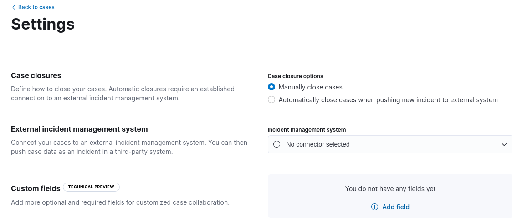

Add connectors to cases
editYou can add connectors to cases to push information to these external incident management systems:
- IBM Resilient
- Jira
- ServiceNow ITSM
- ServiceNow SecOps
- Swimlane
- Webhook - Case Management
To create connectors and send cases to external systems, you must have the appropriate Kibana feature privileges. Refer to Configure access to cases.
Create connectors
editYou can create connectors in Stack Management > Connectors, as described in Connectors. Alternatively, you can create them in Stack Management > Cases:
-
Click Settings.
 - From the Incident management system list, select Add new connector.
- Select an external incident management system.
- Enter your required settings. Refer to IBM Resilient, Jira, ServiceNow ITSM, ServiceNow SecOps, Swimlane, or Webhook - Case Management for connector configuration details.
- Click Save.
Edit connector settings
editYou can create additional connectors, update existing connectors, change the default connector, and change case closure options.
- Go to Stack Management > Cases and click Settings.
- To change whether cases are automatically closed after they are sent to an external system, update the case closure options.
- To change the default connector for new cases, select the connector from the Incident management system list.
- To update a connector, click Update <connector name> and edit the connector fields as required.